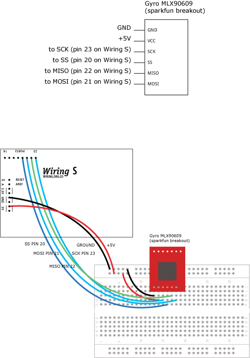

|


This example is for Wiring version 1.0 build 0100+. If you have a previous version, use the examples included with your software. If you see any errors or have comments, please let us know.
Driving Gyro MLX90609 using the SPI by BARRAGAN
Demonstrates the use of the SPI library, it reads an MLX90609 gyroscope. There are 3 types: N2 (75 deg/sec), E2 (150 deg/sec) and R2 (300deg/sec). This sensor can be operated in both SPI and analog. For normal analog operation just connect the sensor TEMP and RATE output pins to Wiring analog inputs.
Demonstrates the use of the SPI library, it reads an MLX90609 gyroscope. There are 3 types: N2 (75 deg/sec), E2 (150 deg/sec) and R2 (300deg/sec). This sensor can be operated in both SPI and analog. For normal analog operation just connect the sensor TEMP and RATE output pins to Wiring analog inputs.

#include <SPI.h> int rate, temperature; void setup() { Serial.begin(9600); // start Serial to print results // set master SPI mode, MSBFIRST byte order, SCK HIGH when idle, data sampling on trailing SCK edge // SCK freq F_CPU/4 SPI.begin(); digitalWrite(SS, HIGH); // disable the sensor } void loop() { rate = getAngularRate(); temperature = getTemperature(); // print values to Serial Serial.print("angular rate: "); Serial.println(adcToAngularRate(rate), DEC); Serial.print("temperature: "); Serial.println(adcToTemperature(temperature), DEC); delay(200); } // get temperature adc in millivolts unsigned int getTemperature() { byte dataH, dataL; digitalWrite(SS,LOW); SPI.transfer(0b10011100); // ADCC for temperature channel digitalWrite(SS,HIGH); delayMicroseconds(250); digitalWrite(SS,LOW); SPI.transfer(0b10000000); // ADCR (ADC reading) Instruction dataH = SPI.transfer(0x00); // get the sensor response high byte dataL = SPI.transfer(0x00); // get the sensor response low byte digitalWrite(SS,HIGH); // The sensor response is two bytes lenght but the answer length // is 11 bits only and saved using the lower 4 bits from the high // (first) byte and the upper 7 bits from the lower (second) byte // (dataH & 0b00001111) gets the lower 4 bits value from the // high byte. // (dataL>>1) gets the upper 7 bits value from the lower byte. // The temperature is the resulting word of the high and low bytes unsigned int result = makeWord((dataH & 0b00001111), (dataL>>1)); return result; } // get angular rate adc in millivolts unsigned int getAngularRate() { byte dataH, dataL; digitalWrite(SS,LOW); SPI.transfer(0b10010100); // ADCC for angular rate channel digitalWrite(SS,HIGH); delayMicroseconds(250); digitalWrite(SS,LOW); SPI.transfer(0b10000000); // send SPI ADCR instruction dataH = SPI.transfer(0x00); // get the sensor response high byte dataL = SPI.transfer(0x00); // get the sensor response low byte digitalWrite(SS,HIGH); // The sensor response is two bytes lenght but the answer length // is 11 bits only and saved using the lower 4 bits from the high // (first) byte and the upper 7 bits from the lower (second) byte // (dataH & 0b00001111) gets the lower 4 bits value from the // high byte. // (dataL>>1) gets the upper 7 bits value from the lower byte. // The angular rate is the resulting word of the high and low bytes unsigned int result = makeWord((dataH & 0b00001111), (dataL>>1)); return result; } // converts the adc reading to angles per second int adcToAngularRate(unsigned int adcValue) { int vOutAngularRate = (adcValue * 25/12)+400; // in mV (millivolts) // from the data sheet, N2 version is 6,67 return (vOutAngularRate - 2500)/6.67; // E2 is 13,33 and R2 is 26,67 mV/deg // change accordingly. } // converts the adc reading to centigrades int adcToTemperature(unsigned int adcValue) { // in mV (millivolts) int vOutTemperature = (adcValue * 25/16)+300; // from the data sheet factor is 10mV/K return 25 + ((vOutTemperature - 2500)/10); }